Computes the total disturbance torque for the ComStar satellite.
The disturbances include solar, gravity gradient, RF and residual dipole. This does not use the CAD disturbance package.
------------------------------------------------------------------------- See also TGG, TRF, Loc3D, SolarF, Shadow, SumRXF, BMF, SCSeries, ComStar, SunBeta, Constant, NewFig, TitleS, XLabelS, YLabelS, Cross, DupVect, SumV, Date2JD, Geo, GeoEclps -------------------------------------------------------------------------
Contents
%------------------------------------------------------------------------------- % Copyright 1994-1998 Princeton Satellite Systems, Inc. All rights reserved. % Since version 2. %-------------------------------------------------------------------------------
Setup
% Number of increments in alpha %------------------------------ nAlpha = 360; % Set equal to 1 to plot all of the plots %---------------------------------------- allPlots = 1; % Constants %---------- pSolar = Constant('solar pressure mks'); degToRad = Constant('Deg to Rad'); % RF %--- rRF = ComStar('R RF'); uRF = ComStar('U RF'); rFPower = ComStar('RF Power'); % Center-of-mass %--------------- cm = ComStar('MO CM'); % Array offsets from full sun (usually due to alignment uncertainties) %--------------------------------------------------------------------- dAN = 5*degToRad; dAS = -5*degToRad; % Surface properties %------------------- box = 1:6; antennas = 7:10; akm = 11; coreSurf = ComStar('Core Surface'); coreArea = ComStar('Core Area'); coreNorm = ComStar('Core Normal'); coreSLoc = ComStar('Core Location'); coreShad = ComStar('Core Shadowing'); cEls = [box antennas akm]; coreSurf = coreSurf(:,cEls); coreArea = coreArea(:,cEls); coreNorm = coreNorm(:,cEls); coreSLoc = coreSLoc(:,cEls); coreShad = coreShad(:,cEls); arraySurf = ComStar('Solar Array Surface'); arrayArea = ComStar('Solar Array Area'); arrayNorm = ComStar('Solar Array Normal'); arraySLoc = ComStar('Solar Array Location'); arrayShad = ComStar('Solar Array Shadowing'); arrayNBase = ComStar('North Solar Array Base'); arraySBase = ComStar('South Solar Array Base'); iNorthArray = ComStar('North Array Elements'); iSouthArray = ComStar('South Array Elements'); inertia = ComStar('MO Inertia'); dateStart = [1998 6 21 0 0 0]; mu = Constant('mu'); wo = Geo; tGG = TGG( inertia, [0;0;1], wo ); % The RF contribution %-------------------- tRF = SumV( TRF( rRF-cm, uRF, rFPower ) ); % The Residual dipole %-------------------- rDipArray = -ComStar('Residual Dipole Array'); rDipCore = -ComStar('Residual Dipole Core'); % Assign the base distances to the base array %-------------------------------------------- arrayBase(:,iNorthArray) = DupVect(arrayNBase,length(iNorthArray)); arrayBase(:,iSouthArray) = DupVect(arraySBase,length(iSouthArray)); % Draw the cps %------------- Loc3D([coreSLoc arrayBase + arraySLoc],[coreNorm arrayNorm],cm) %--------------

The main loop
%-------------- dsunAlpha = 2*pi/nAlpha; % When the sun angle is zero, the solar array normal is pointing % along -Z. This is solar noon. % The coordinate frame is +Z to the earth, +Y south, +X east. %--------------------------------------------------------------- deg = 0:359; jD = Date2JD([1997 3 20 14 0 0]); % Vernal equinox-the sun is aligned with the +x ECI axis % Initialize the vectors %----------------------- torque = zeros(3,360); torqueCore = zeros(3,360); torqueSA = zeros(3,360); torqueOther = zeros(3,360); bField = zeros(3,360); torqueCoreDipole = zeros(3,360); torqueSADipole = zeros(3,360); sunVector = zeros(3,360); for m = 1:3
% Sun out-of-plane angle (§) %--------------------------- sunBeta = (m-2)*23; cBeta = cos(sunBeta*degToRad); sBeta = sin(sunBeta*degToRad); for k = 1:nAlpha sunAlpha = (k-1)*dsunAlpha; cAlpha = cos(sunAlpha); sAlpha = sin(sunAlpha); r = 42167*[cAlpha;sAlpha;0]; % This is the sun in the body frame %---------------------------------- sun = -[sAlpha*cBeta;sBeta;cAlpha*cBeta]; % Test for eclipses %------------------ nPSolar = pSolar*GeoEclps(sunAlpha,sunBeta); % Transformation matrices from the array frame to the core frame %--------------------------------------------------------------- bN = [-cos(sunAlpha + dAN) 0 -sin(sunAlpha + dAN);... 0 1 0;... sin(sunAlpha + dAN) 0 -cos(sunAlpha + dAN) ]; bS = [-cos(sunAlpha + dAS) 0 -sin(sunAlpha + dAS);... 0 1 0;... sin(sunAlpha + dAS) 0 -cos(sunAlpha + dAS) ]; if ( nPSolar > 0 ) % The solar array %---------------- f = SolarF( nPSolar, arraySurf, [bN*arrayNorm(:,iNorthArray) bS*arrayNorm(:,iSouthArray)], sun, arrayArea ); sASTorque = SumRXF( [bN*arraySLoc(:,iNorthArray) bS*arraySLoc(:,iSouthArray)] + arrayBase, f, cm ); % Find core modules that are shadowed and set their transmissivities to 1 %------------------------------------------------------------------------ n = Shadow(sunAlpha,sunBeta,coreShad); coreSTemp = coreSurf; if( isempty(n) ) coreSTemp(4,n) = ones(1,length(n)); end % Compute the torques %-------------------- f = SolarF( nPSolar, coreSTemp, coreNorm, sun, coreArea ); coreSTorque = SumRXF( coreSLoc, f, cm ); else coreSTorque = [0;0;0]; sASTorque = [0;0;0]; end % The residual dipole contribution %--------------------------------- bField(:,k) = BMF(r,jD,1); coreDipoleTorque = Cross( rDipCore, bField(:,k) ); sADipoleTorque = Cross( bN*rDipArray + bS*rDipArray, bField(:,k) ); % Sum the components %------------------- torqueCore(:,k) = coreSTorque; torqueSA(:,k) = sASTorque; torqueOther(:,k) = tRF + tGG; torqueCoreDipole(:,k) = coreDipoleTorque; torqueSADipole(:,k) = sADipoleTorque; torque(:,k) = torqueCore(:,k) + torqueSA(:,k) + torqueOther(:,k) + torqueCoreDipole(:,k) + torqueSADipole(:,k); sunVector(:,k) = sun; end
Harmonic expansion
%------------------- t = linspace(0,86400,360); tHarm = [ SCSeries( t,6,6,wo,torque(1,:) )';... SCSeries( t,6,6,wo,torque(2,:) )';... SCSeries( t,6,6,wo,torque(3,:) )']*1.e6; tMag = sqrt(tHarm(:,2:4).^2 + tHarm(:,8:10).^2); tPhase = atan2(tHarm(:,5:7),tHarm(:,2:4)); kPrint = [1:4 8:10]; fprintf(1,'\n\nSun Beta Angle = %4.1f deg\n\n',sunBeta); fprintf(1,' Bias Sin(wo) Sin(2*wo) Sin(3*wo) Cos(wo) Cos(2*wo) Cos(3*wo)\n'); fprintf(1,'x %9.2f %9.2f %9.2f %9.2f %9.2f %9.2f %9.2f microNm\n', tHarm(1, kPrint) ); fprintf(1,'y %9.2f %9.2f %9.2f %9.2f %9.2f %9.2f %9.2f microNm\n', tHarm(2, kPrint) ); fprintf(1,'z %9.2f %9.2f %9.2f %9.2f %9.2f %9.2f %9.2f microNm\n\n',tHarm(3, kPrint) ); fprintf(1,' Bias Sin(wo) Sin(2*wo) Sin(3*wo) phi(wo) phi(2*wo) phi(3*wo)\n'); fprintf(1,'x %9.2f %9.2f %9.2f %9.2f microNm %9.2f %9.2f %9.2f rad\n', tHarm(1,1), tMag(1,:), tPhase(1,:) ); fprintf(1,'y %9.2f %9.2f %9.2f %9.2f microNm %9.2f %9.2f %9.2f rad\n', tHarm(2,1), tMag(2,:), tPhase(2,:) ); fprintf(1,'z %9.2f %9.2f %9.2f %9.2f microNm %9.2f %9.2f %9.2f rad\n\n',tHarm(3,1), tMag(3,:), tPhase(3,:) ); fPath = FindDirectory('ComsatData'); save(fullfile(fPath,'DistModel'),'tHarm','-v6') %-------------------------------------------------------------------------
Sun Beta Angle = -23.0 deg
Bias Sin(wo) Sin(2*wo) Sin(3*wo) Cos(wo) Cos(2*wo) Cos(3*wo)
x -6.34 8.04 -0.19 0.14 -8.74 -3.82 0.05 microNm
y 3.80 53.26 -5.10 20.09 -1.15 0.32 -1.14 microNm
z -0.04 9.35 11.71 0.15 7.77 -0.38 0.11 microNm
Bias Sin(wo) Sin(2*wo) Sin(3*wo) phi(wo) phi(2*wo) phi(3*wo)
x -6.34 11.88 3.83 0.15 microNm 0.00 3.05 0.32 rad
y 3.80 53.27 5.11 20.12 microNm -0.00 -2.38 0.01 rad
z -0.04 12.16 11.71 0.19 microNm -0.33 -0.00 1.42 rad
Sun Beta Angle = 0.0 deg
Bias Sin(wo) Sin(2*wo) Sin(3*wo) Cos(wo) Cos(2*wo) Cos(3*wo)
x 0.05 9.49 -0.03 0.13 -0.15 -0.10 0.10 microNm
y 3.80 60.89 -6.06 23.43 -1.28 0.36 -1.32 microNm
z 0.39 0.33 0.03 -0.14 8.34 0.89 -0.74 microNm
Bias Sin(wo) Sin(2*wo) Sin(3*wo) phi(wo) phi(2*wo) phi(3*wo)
x 0.05 9.49 0.10 0.16 microNm 0.01 -2.90 0.39 rad
y 3.80 60.91 6.07 23.46 microNm 0.00 -2.35 0.03 rad
z 0.39 8.34 0.90 0.75 microNm 0.17 -1.21 2.62 rad
Sun Beta Angle = 23.0 deg
Bias Sin(wo) Sin(2*wo) Sin(3*wo) Cos(wo) Cos(2*wo) Cos(3*wo)
x 6.43 8.34 0.07 0.15 8.49 3.63 0.14 microNm
y 3.80 53.26 -5.10 20.09 -1.15 0.32 -1.14 microNm
z -0.04 -8.71 -11.71 -0.34 8.08 0.43 0.13 microNm
Bias Sin(wo) Sin(2*wo) Sin(3*wo) phi(wo) phi(2*wo) phi(3*wo)
x 6.43 11.90 3.63 0.20 microNm 0.00 0.28 -0.11 rad
y 3.80 53.27 5.11 20.12 microNm -0.00 -2.38 0.01 rad
z -0.04 11.88 11.72 0.37 microNm 2.79 3.14 -1.90 rad
Plotting
%------------------------------------------------------------------------- NewFig(sprintf('Total Torque: Beta = %4.1f deg',sunBeta) ); subplot(221) plot(deg,torque(1,:)*1e6) grid on YLabelS('X Torque (microNm)') XLabelS('Alpha (deg)') TitleS('Torque') subplot(222) plot(deg,torque(2,:)*1e6) grid on YLabelS('Y Torque (microNm)') XLabelS('Alpha (deg)') TitleS('Torque') subplot(223) plot(deg,torque(3,:)*1e6) grid on YLabelS('Z Torque (microNm)') XLabelS('Alpha (deg)') TitleS('Torque') subplot(224) plot(deg,sunVector(1,:),deg,sunVector(2,:),'--',deg,sunVector(3,:),'-.') grid on YLabelS('Unit Vector') XLabelS('Alpha (deg)') TitleS('Sun') if( allPlots == 1) %------------------------------------------------------------------------- NewFig(sprintf('Core Solar Torque: Beta = %4.1f deg',sunBeta) ); subplot(221) plot(deg,torqueCore(1,:)*1e6) grid on YLabelS('X Torque (microNm)') XLabelS('Alpha (deg)') TitleS('Torque') subplot(222) plot(deg,torqueCore(2,:)*1e6) grid on YLabelS('Y Torque (microNm)') XLabelS('Alpha (deg)') TitleS('Torque') subplot(223) plot(deg,torqueCore(3,:)*1e6) grid on YLabelS('Z Torque (microNm)') XLabelS('Alpha (deg)') TitleS('Torque') subplot(224) plot(deg,sunVector(1,:),deg,sunVector(2,:),'--',deg,sunVector(3,:),'-.') grid YLabelS('Unit Vector') XLabelS('Alpha (deg)') TitleS('Sun') %------------------------------------------------------------------------- NewFig(sprintf('Solar Array Solar Torque: Beta = %4.1f deg',sunBeta) ); subplot(221) plot(deg,torqueSA(1,:)*1e6) grid on YLabelS('X Torque (microNm)') XLabelS('Alpha (deg)') TitleS('Torque') subplot(222) plot(deg,torqueSA(2,:)*1e6) grid on YLabelS('Y Torque (microNm)') XLabelS('Alpha (deg)') TitleS('Torque') subplot(223) plot(deg,torqueSA(3,:)*1e6) grid on YLabelS('Z Torque (microNm)') XLabelS('Alpha (deg)') TitleS('Torque') subplot(224) plot(deg,sunVector(1,:),deg,sunVector(2,:),'--',deg,sunVector(3,:),'-.') grid on YLabelS('Unit Vector') XLabelS('Alpha (deg)') TitleS('Sun') %------------------------------------------------------------------------- NewFig(sprintf('GG and RF Torque: Beta = %4.1f deg',sunBeta) ); subplot(221) plot(deg,torqueOther(1,:)*1e6) grid on YLabelS('X Torque (microNm)') XLabelS('Alpha (deg)') TitleS('Torque') subplot(222) plot(deg,torqueOther(2,:)*1e6) grid on YLabelS('Y Torque (microNm)') XLabelS('Alpha (deg)') TitleS('Torque') subplot(223) plot(deg,torqueOther(3,:)*1e6) grid on YLabelS('Z Torque (microNm)') XLabelS('Alpha (deg)') TitleS('Torque') subplot(224) plot(deg,bField(1,:),deg,bField(2,:),'--',deg,bField(3,:),'-.') grid on YLabelS('Field (nT)') XLabelS('Alpha (deg)') TitleS('Magnetic field') %------------------------------------------------------------------------- NewFig(sprintf('Dipole Torques: Beta = %4.1f deg',sunBeta) ); subplot(321) plot(deg,torqueCoreDipole(1,:)*1e6) grid on YLabelS('X Torque (microNm)') XLabelS('Alpha (deg)') TitleS('Core Torque') subplot(322) plot(deg,torqueCoreDipole(2,:)*1e6) grid on YLabelS('Y Torque (microNm)') XLabelS('Alpha (deg)') TitleS('Core Torque') subplot(323) plot(deg,torqueCoreDipole(3,:)*1e6) grid YLabelS('Z Torque (microNm)') XLabelS('Alpha (deg)') TitleS('Core Torque') subplot(324) plot(deg,torqueSADipole(1,:)*1e6) grid on YLabelS('X Torque (microNm)') XLabelS('Alpha (deg)') TitleS('Solar Array Torque') subplot(325) plot(deg,torqueSADipole(2,:)*1e6) grid YLabelS('Y Torque (microNm)') XLabelS('Alpha (deg)') TitleS('Solar Array Torque') subplot(326) plot(deg,torqueSADipole(3,:)*1e6) grid on YLabelS('Z Torque (microNm)') XLabelS('Alpha (deg)') TitleS('Solar Array Torque') end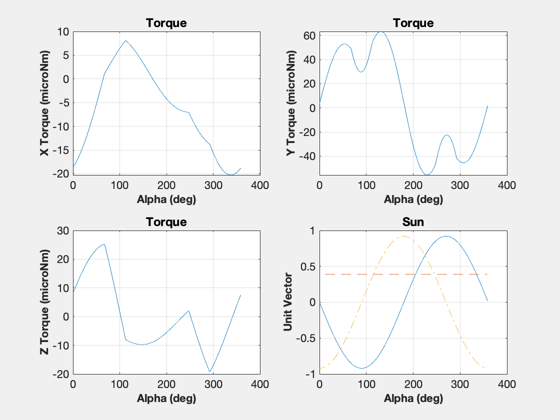 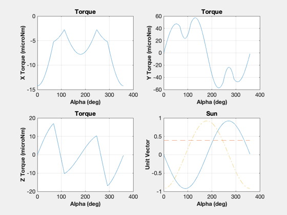 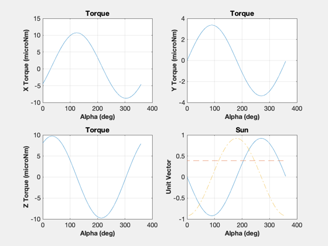 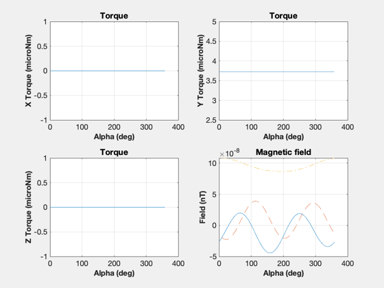 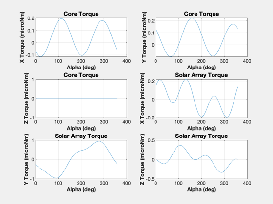 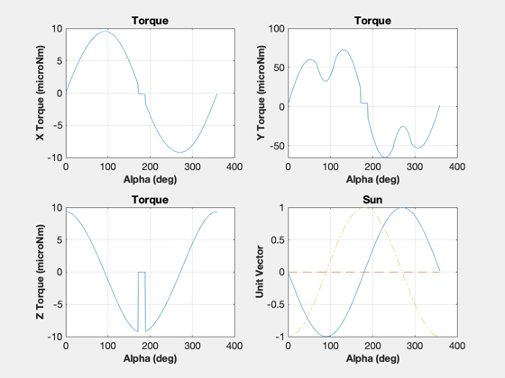 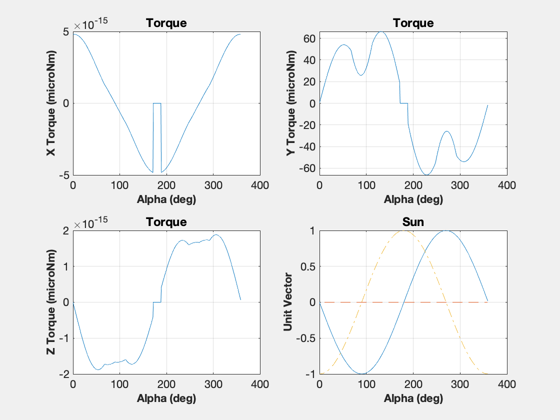 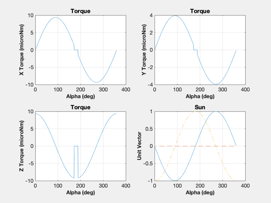 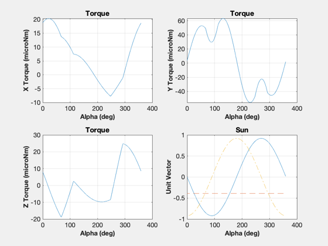 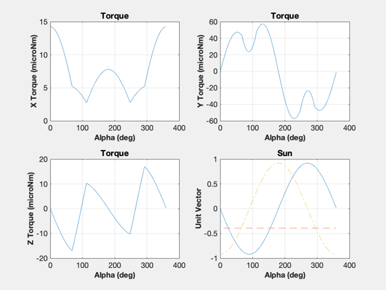 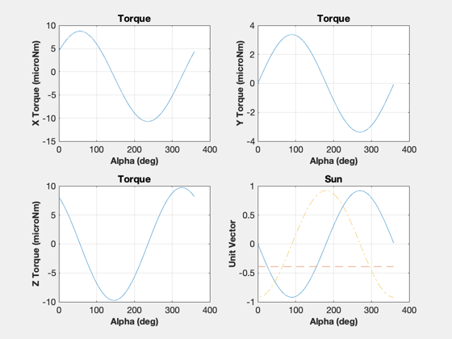 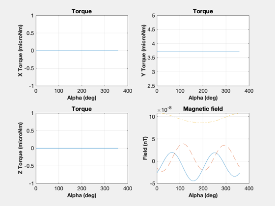
end Figui %-------------------------------------- % PSS internal file version information %--------------------------------------